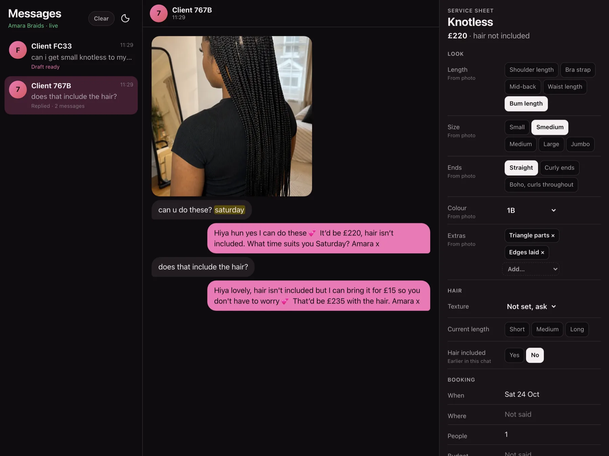
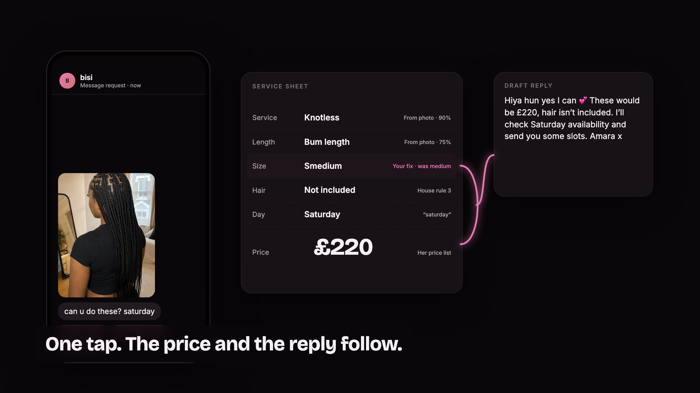
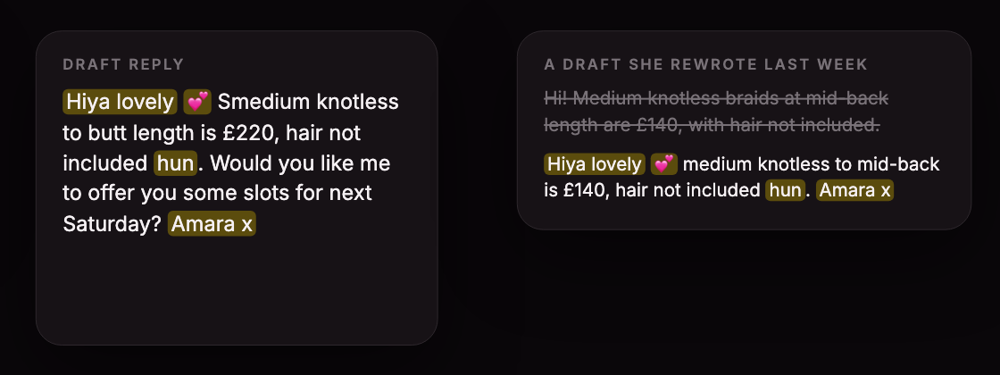
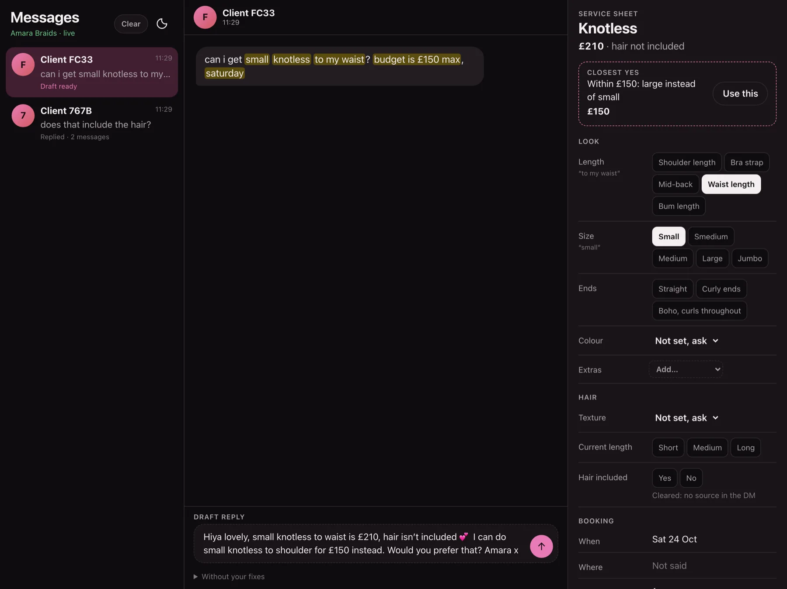

Night Shift · London · October 2026 · built on Mubit
Turn “can u do these?” into a booking.
A stylist’s DM inbox that drafts priced replies in her voice, and learns from every fix she makes. Fully right replies go from 30% to 87% on DMs it never trained on.
The problem
The product

One tap

Results · locked test DMs, never sent to Mubit for training
| Stylist | Test DMs | Plain model | Her fixes | + her rules in code | |
|---|---|---|---|---|---|
| Amara Braids, braider | 60 | 30% | 53% | 87% | |
| Lived-in Colour, colourist | 20 | 15% | 60% | 90% | |
| Gloss by Jade, nail tech | 24 | 25% | 50% | 92% |
Fully right means every field of the brief matches the label. Her fixes guide the model; her rules in code decide the next step, what’s missing, the dates and any clash between photo and text exactly. Checked on training data first, then scored once on the locked set.
It learns from her

Closest yes

Use of Mubit
Today
Her fixes and rules shape the next draft straight away. Replies fully right on DMs it never trained on.
Over time
Mubit trains her fixes into a small model just for her. In training now: her first version matches the big model on 50% of tests, aiming for 95%.
Every model call goes through Mubit. Test runs are never used for training.
Technical execution
Three stylists, one engine
Next: her real calendar so it offers only free slots, deposits at booking, Instagram’s messaging API, and serving her adapter once it passes.